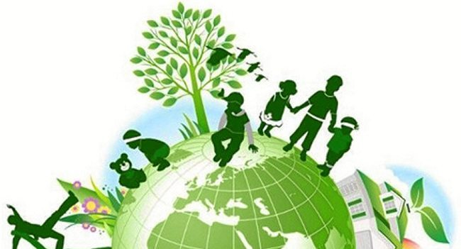
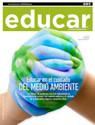

xddd
Reeducar
xd
Importancia de Reeducar.
REEDUCAR es promover la educación ambiental eficaz en colaboración con instituciones educativas. Una de sus principales actividades es ejecutar actividades en alianza con otras organizaciones para la conservación de la biodiversidad a través de programas y ofrecer servicios especializados sobre educación ambiental para la sustentabilidad en instituciones educativas.

xddddddd
xd
Enseñar A Cuidar El Planeta
Educar a los niños en el respeto al medio ambiente contribuye a mejorar la salud de nuestros hijos, mejorar su calidad de vida en el futuro y la salud de nuestro planeta. Desde pequeños cuidar y respetar el medio ambiente les convertirá en adultos responsables y conscientes de los peligros que conlleva el mal uso de los recursos naturales.
Nuestra labor como padres es esencial en este proceso. En muchas comunidades autónomas se desarrolla campañas para enseñar a los niños la importancia de cuidar y respetar nuestro medio ambiente. Tareas sencillas como apagar las luces que no se están usando y reciclar residuos ayudan a que los niños vivan con una actitud de respeto el medio ambiente, y que al ir creciendo, vayan adoptando medidas cada vez más importantes para poder dejar un mundo saludable a generaciones posteriores.Nuestra labor como padres es esencial en este proceso. En muchas comunidades autónomas se desarrolla campañas para enseñar a los niños la importancia de cuidar y respetar nuestro medio ambiente. Tareas sencillas como apagar las luces que no se están usando y reciclar residuos ayudan a que los niños vivan con una actitud de respeto el medio ambiente, y que al ir creciendo, vayan adoptando medidas cada vez más importantes para poder dejar un mundo saludable a generaciones posteriores.
xddddddd
El medio Ambiente Desde Casa
Nuestra labor como padres es esencial en este proceso. En muchas comunidades autónomas se desarrolla campañas para enseñar a los niños la importancia de cuidar y respetar nuestro medio ambiente. Tareas sencillas como apagar las luces que no se están usando y reciclar residuos ayudan a que los niños vivan con una actitud de respeto el medio ambiente, y que al ir creciendo, vayan adoptando medidas cada vez más importantes para poder dejar un mundo saludable a generaciones posteriores.

xddddddd